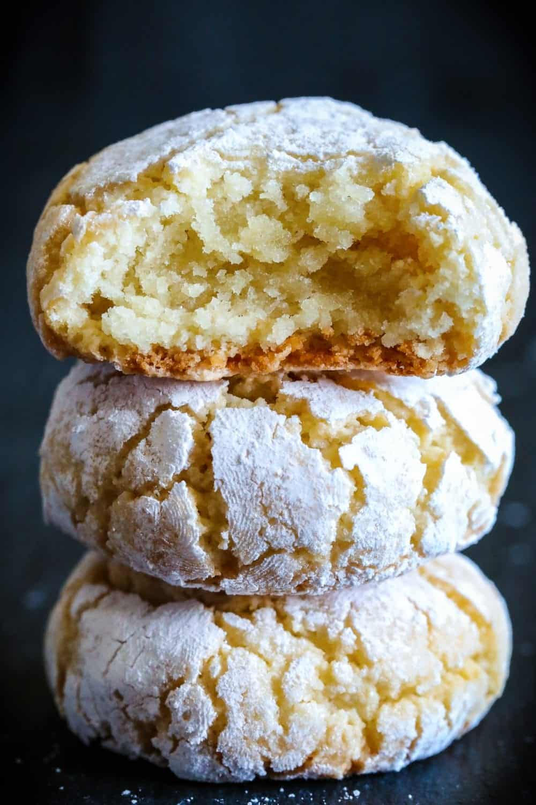

Amaretti Cookies

Description
Italian cookie with slightly crisp outside and soft and chewy inside.
Sweet almond flavored cookie.
Ingredients
- 5 eggs whites
- Pinch salt
- 4 1/2-5 cups almond flour
- 1 1/2 cup granulated sugar
- 1/2 tsp vanilla extract
- 1-2 tsp almond extract
- 1/2 cup granulated sugar
- 1/2 powdered sugar
Steps
- Separate 5 egg whites into a bowl then add a pinch of salt.
- Using an electric mixer beat the egg whites until stiff peaks form.
- Set that aside and sift 5 cups of almond flour with 1 1/2 cups of granulated sugar into a bowl.
- Add about 1/3 of the almond flour mixture into the egg whites and fold it in gently with a spatula.
- Now go ahead and add 1/2 tsp vanilla extract and 2 tsps of almond extract. Then quickly fold it in.
- Add the second third of the almond flour mixture to the egg whites and gently fold it in again.
- Sift in the remaining third of the almond flour mixture and fold it in one last time. at this point, the cookie dough should have a thick paste like texture.
- Scoop out mounds of the cookie dough and place them into a plate of granulated sugar. Roll the scoop of cookie dough into the sugar, then take it into your hands and round it out to a ball.
- Drop the ball into a bowl of powdered sugar and evenly coat it.
- Place the cookies onto a baking sheet lined with parchment paper and lightly press each cookie with your hand. Bake at 325 degrees Fahrenheit for 20-25 minutes.
Homepage